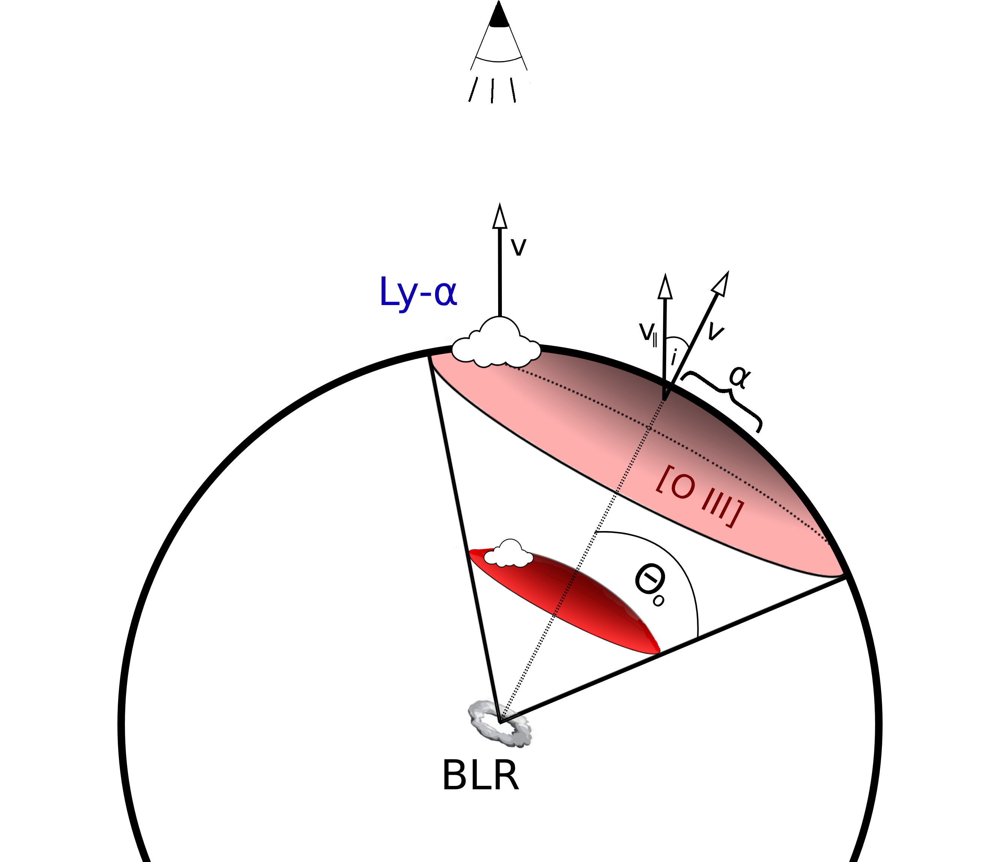

Active Galactic Nuclei (AGNs) are black holes in the centres of galaxies that undergo phases of growth, in the form of accreting gas. To better understand how this happens in detail, understanding the AGN structure remains a major objective since their discovery 60 years ago. This can be achieved by monitoring small-scale AGN variability to map the structure (the so-called broad-line region, or "BLR") with light echoes, or directly resolving the BLR size which has become feasible only with recent developments at the VLT interferometer.
The other big question that remains is how does the gas get there to begin with? The BLR is up to tenthousand times smaller that the host galaxy, with timescales and gas dynamics being decoupled from each other. The relevant mechanisms must describe multiple time, temperature and density scales to bridge distance before it is accumulated on the accretion disc and eventually disappears behind the black hole's event horizon. What host galaxy properties promote the AGN phase? How do the stellar and gas kinematics in the host galaxy affect AGN activity and vice versa? What role does the host galaxy star formation play on different spatial and time scales? With my research I try to contribute bringing us closer to answering these questions.
Highlights
Calibrating the Black Hole Mass - Host Galaxy Scaling Relations in AGNs
Active galactic nuclei (AGNs) provide a unique chance to study SMBH growth and measure their masses beyond the local Universe. However, measuring galaxy properties like stellar velocity dispersion (σ⋆) and dynamical mass (Mdyn) in AGN hosts is challenging due to AGN contamination, observational limitations, and galaxy diversity. We analyzed a sample of AGNs with highly accurate SMBH mass measurements using advanced techniques like reverberation mapping and VLTI/GRAVITY imaging. By mapping stellar motion across these galaxies, we discovered that SMBH mass correlates best with σ⋆ measured within the galaxy's bulge. Importantly, we showed that AGNs follow the same SMBH-host galaxy scaling laws as inactive galaxies. This indicates the AGN phase doesn’t significantly alter SMBH mass over time. These findings support using the established virial factor (log f = 0.65) to estimate SMBH masses in distant AGNs, enhancing our understanding of SMBH growth throughout cosmic history.
Tracing the Circumnuclear Star Formation in Mrk 1044
This study focusses on the host galaxy conditions that allow rapid growth of supermassive black hole. The target is Mrk 1044, a narrow-line Seyfert 1 (NLS1) galaxy, an AGN class that have high specific black hole accretion-rates, may help us understand how black hole activity begins. Using 3D spectroscopy obtained with ESO/MUSE NFM-AO, we mapped Mrk 1044’s stars and gas from galaxy-wide scales down to its central regions. We found a compact, star-forming region near the nucleus that remains unaffected by the AGN’s activity, indicating that Mrk 1044’s AGN phase likely began recently. This aligns with the idea that NLS1 galaxies are in an early AGN stage, where star formation and black hole growth are closely linked. The animation on the right shows the flux density maps (top panel) of the ionized gas emission from the host galaxy on galaxy scales (left) and nuclear scales (right). Traversing the emission lines of Hα and the forbidden [N II] doublet, the maps show the disk-like rotation pattern of the host galaxy.
A parsec-scale multi-phase outflow in the heart of Mrk 1044

Following our work on nuclear star formation in Mrk 1044, we conducted an in-depth analysis of its core region. Using spectroastrometry - a technique that traces emission lines at sub-pixel resolution- we identified and located multiple components of outflowing ionized gas. These AGN-driven winds are compact, exhibit relatively high gas densities, and were launched only recently (within the past 10,000 years). Given the substantial circumnuclear star formation, our findings suggest that Mrk 1044’s AGN phase began recently enough that the ionized gas outflow has not yet significantly impacted the host galaxy's ISM near the nucleus.
The Imprint of Cosmic Web Quenching on Central Galaxies
In this project, we investigated how the cosmic web influences central galaxies in the Sloan Digital Sky Survey. We focus on how properties like star formation rate, age, metallicity, and element ratios vary with a galaxy’s distance from cosmic web structures -nodes, walls, and filaments- identified using the DISPERSE tool. Controlling for factors such as galaxy mass and local density (field vs. group settings), we find that galaxies closer to these cosmic features tend to have lower star formation rates, are older, richer in metals, and show higher [α/Fe] ratios. These trends hold true in both field and group environments, supporting the idea that the cosmic web influences galaxy evolution through environmental effects like ram pressure stripping or the intrinsic properties of the cosmic web itself.